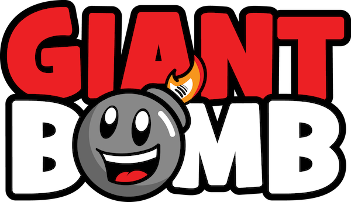

Giant Bomb Tribute
It's a website about video games!

Giant Bomb Logo © 2020 CBS Interactive Inc.
Giant Bomb is a video game website which launched in 2008 founded by Jeff Gerstmann and Ryan Davis. The website pioneered "Quick Looks" and streaming personality-focused video content prior to Twitch.tv and Youtube Gaming. It was also an early video game website to succeed thanks to the Giant Bomb Premium subscription service. This predated Patreon-based funding of projects and websites.
There have been many members of Giant Bomb over the years. Here is a list of present staff:
Jeff Gerstmann
Vinny Caravella
Brad Shoemaker
Alex Navarro
Matt Rorie
Jason Oestreicher
Abby Russell
Ben Pack
Jan Ochoa